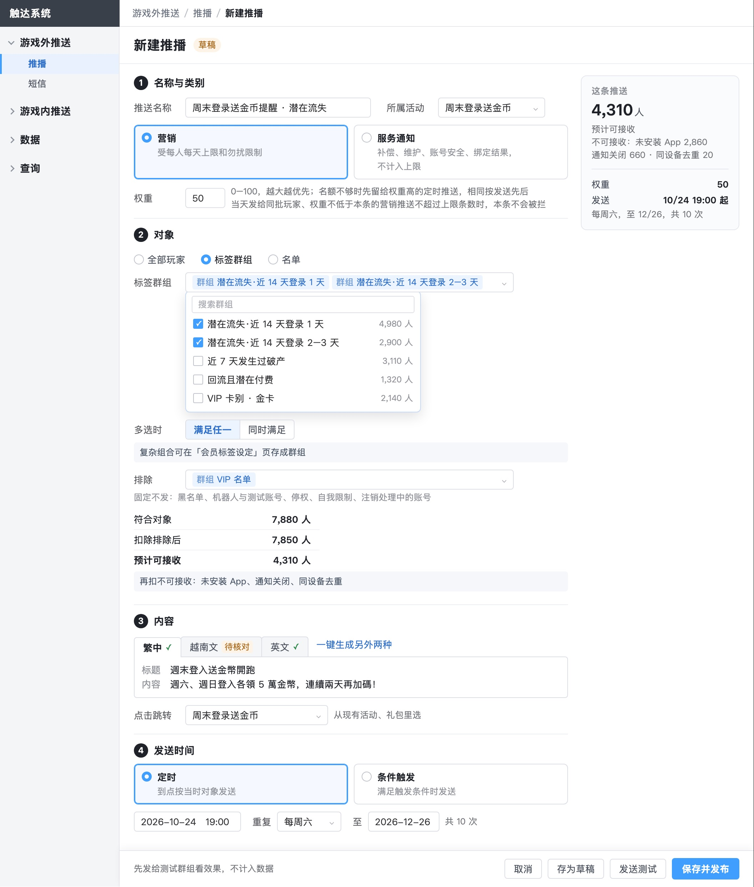
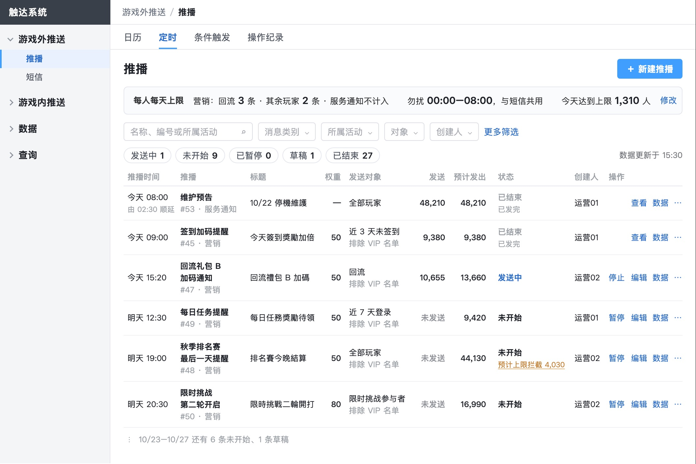

推送系统后台 · 需求评审版 · 2026-10-28
推播权重改成填 0–100 的数字，列表的发送对象写群组名；全稿同类问题一起改完，待你验收
改完后由没参与修改的人逐张看截图复核，你退回的两处和同类问题都已确认清掉。
0–100
权重填整数，越大越优先，默认 50，相同按发送先后。服务通知、短信不设权重。
群组名
推播、短信、弹窗、快显的列表，对象列都写群组名；有排除的，下一行写排除。
验收
要你做的：验收评审版成品（文末链接）。权重范围与默认值是我定的，可推翻。
01权重：运营在新建页直接填数字，列表、确认框、名额占用都显示这个数

新建推播：「名称与类别」段的权重是数字框，默认 50，旁边写明怎么用
| 位置 | 原来 | 现在 |
|---|
| 新建页 | 普通｜优先｜最优先 三选一 | 数字框，0–100，默认 50 |
| 列表 | 普通、优先 | 50、80；服务通知写「—」 |
| 规则 | 「最优先」在三种条件下不会被拦 | 任一定时推送：当天发给同批玩家、权重不低于它的营销推送不超过上限条数，它就不会被拦 |
- 范围参照 Adobe Journey Optimizer 的 Priority score（0–100，越大越优先），它也是按优先级给后面的推送留名额。
- 弹窗的「优先级」仍是数字越小越先，和推播权重方向相反，规则里已写明。
02发送对象：列表写群组名，运营一眼看出这条发给谁

推播定时列表：发送对象写群组名，下一行写排除；权重列是数字；标题列是玩家看到的繁中标题
- 原来这一列写的是 74,480、14,500 这类人数，看不出发给谁；人数看「预计发出」列。
- 条件触发不限群组的写「触发的玩家 · 不限群组」，不再写成「全部玩家」，免得读成发全服。
- 弹窗、快显列表没有别的人数列，第二行写扣除排除后的人数。
03按同类问题查了全稿，另外改掉的集中在三类
配置项给具体值
- 弹窗冷却原来只写「不设」或「600 秒」，改为「数字＋分钟／小时／天」。
- 弹窗弹出频率原来是一格文字，改为先选周期（每天、每周、每 N 天、活动期间）再填次数。
列里放的就是列名说的东西，认一条记录要的信息都在
- 弹窗规则列表「对象人数」改为「对象」，写群组名；规则编辑页摘要补上对象。
- 推播名称原来和活动同名（如「秋季排名赛」），改为能区分的名称（「秋季排名赛最后一天提醒」）；标题列放玩家看到的标题。
- 推播、短信列表名称下写消息类别（营销、服务通知）；「操作人」列改为「创建人」，和筛选一致。
同一件事在各页对得上
- 全稿原来有两个「今天」（配置页 10/21、数据页 10/12），统一为 10/21，数据页标为历史区间。
- 单条数据里一条推送拦截 460 人，而当天全部推送只拦了约 45 人次，已改为 40 人；日历每天「4 条条件触发」实际只有 3 条。
- 破产实验的对照组原来弹的礼包和大厅合计每天 1 次，大厅先弹过就不弹，对比会失真；对照组改用只在破产位置弹的内容。
04替你定、可推翻
| 定了什么 | 依据 | 不同意改回哪里 |
|---|
| 权重 0–100、默认 50 | 默认放中间，重要的调高、次要的调低都有空间 | 第 1 页新建推播与「上限与勿扰」规则 |
| 停止发送中的推送：已交给服务商的不撤回（原写「待研发确认」） | 同一页另一条已写「已发出的不撤回」，两处矛盾；推送服务商交出后无法撤回 | 第 1 页「停止」规则 |
| 大厅兜底规则「其余」的对象写成全部玩家，排除本位置其他规则的群组 | 对象只有全部玩家、标签群组、名单三种，原写法不在其中；上架新规则时确认框提醒补排除 | 第 4 页弹窗规则「对象」 |
| 只触发一次的条件触发发完后为已结束，列表默认不列 | 与定时推送「已结束默认不列」一致 | 第 2 页条件触发列表 |
05为什么之前没查出来，已经补上的做法
- 之前的审查只核「图和规则说的一致」「运营场景能走通」，没有逐个字段问「运营在这里要配出什么」「这一列运营要认什么」。规则里本来就写着「发送对象（符合对象人数）」，图文一致就放过了。
- 做减法时把权重从 1–10 改成三档，是从「名额只有 2–3 条」的算法角度想的，没从运营怎么配出发。
- 已写进交付前必查：交付前由没改过稿的人逐张看截图，逐个字段核「具体值、列内容、跨页一致、截图完整」，改完再由另一位复核，确信问题清零才交给你。
06评审前要向服务商确认的一处
- 短信规则写「三种语言都按 70 字计 1 则」，英文 112 字计 2 则。多数服务商纯英文按 160 字符计 1 则；如果服务商也这样算，英文示例和费用要改。
成品：评审版_定稿改_1027/推送系统后台集成需求/3_原型_需求评审版.html（单文件，34 张图已内嵌）
还要你定的，和之前一样：系统名「触达系统」要不要改；云端不再引用的旧页删不删；提交推送、覆盖云端。